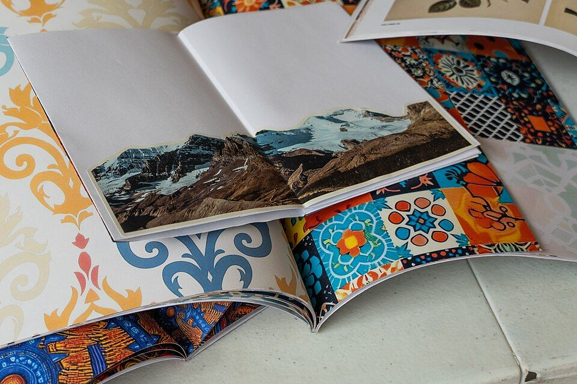
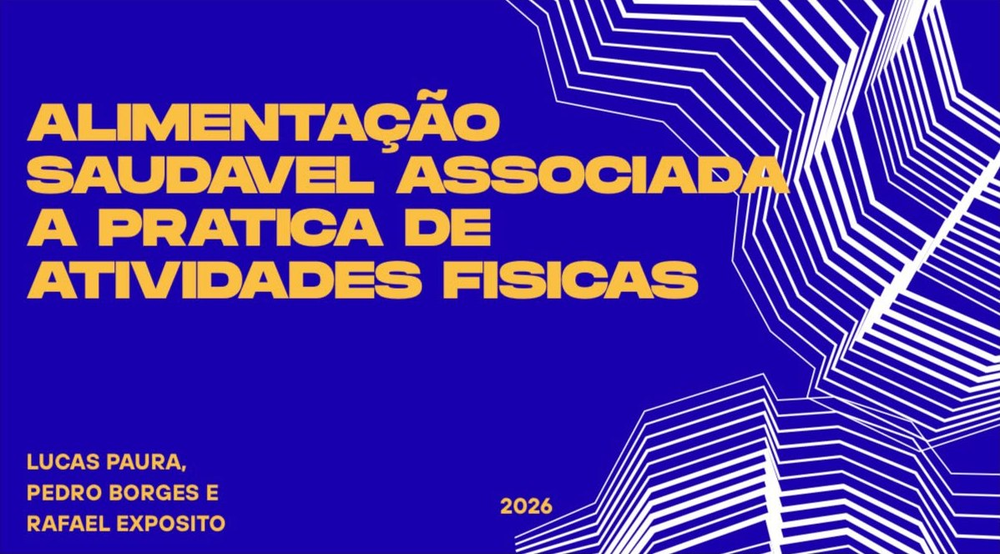

O que estudei
- Fanzine
- Apresentação oral com slides
- Gêneros textuais usados ao longo do ano
Fanzine é uma revista artesanal que mistura texto, desenho e colagem. Como o espaço é pequeno, o texto tem que ser curto.
Numa apresentação, o slide serve de apoio para quem fala. Se tiver texto demais, as pessoas ficam lendo e param de ouvir.
Neste ano usamos memorial, dossiê, projeto de lei e documento de posição. Cada um tem seu próprio jeito de escrever.
Atividades e trabalhos
- Tarefa integrada de Linguagens (2º bimestre): Fanzine
- Atividade Integrada de Linguagens (4º bimestre)
- Envio da apresentação de slides
A apresentação "Alimentação saudável associada à prática de atividades físicas" foi feita em trio e tem ligação com Educação Física e Biologia.
Evidências da aprendizagem
Capa da apresentação.

Minha reflexão
Apresentar projetos e trocar ideias com colegas e professores me ajudou na comunicação. Ainda quero melhorar nisso.